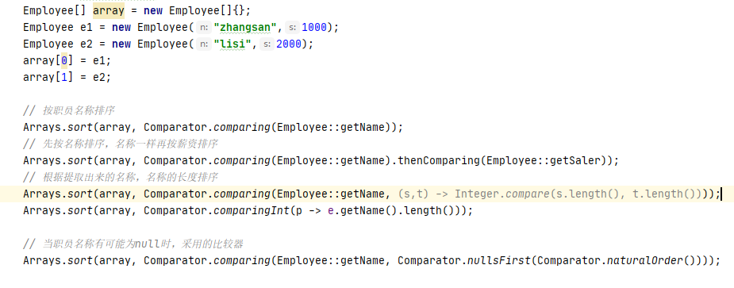

lambda名称的由来
很多年前，那时还没有计算机，逻辑学家Alonzo Church想要形式化地表示能有效计算的数学函数。（奇怪的是，有些函数已经知道是存在的，但是没有人知道该如何计算这些函数的值。）他使用了希腊字母lambda (λ)来标记参数。
为什么是字母λ? Church已经把字母表里的所有其他字母都用完了吗？实际上，权威的《数学原理》一书中就使用重音符^来表示自由变量，受此启发，Church使用大写lambda（Λ）表示参数。不过，最后他还是改为使用小写的lambda(λ)。从那以后，带参数变量的表达式就被称为lambda表达式。
函数式接口
对于只有一个抽象方法的接口，需要这种接口的对象时，就可以提供一个lambda表达式。这种接口称为函数式接口（functional interface）。
- 一个函数式接口有且只有一个抽象方法（不一定非得用@FunctionalInterface注解，但建议使用注解，因为但你无意中增加了另一个非抽象方法编译器会提示错误消息）。
- 默认方法不是抽象方法，因为它们已经实现了。
- 重写了超类Object类中任意一个public方法的方法并不算接口中的抽象方法。
组成lambda表达式的3部分
- 一个代码块
- 参数
- 自由变量的值，这是指非参数而且不在代码中定义的变量。
lambda表达式的重点是延迟执行,这个有很多原因，如：
- 在一个单独的线程中运行代码；
- 多次运行代码；
- 在算法的适当位置运行代码（例如，排序中的比较操作）；
- 发生某种情况时执行代码（如，点击了一个按钮，数据到达，等等）；
- 只在必要时才运行代码。
常用的函数式接口
Comparator接口示例
